Dans ce chapitre, je vais vous montrer brièvement comment se présente la carte Arduino, comment l’installer et son fonctionnement global.
Sommaire
Présentation de la carte
Pour commencer notre découverte de la carte Arduino, je vais vous présenter la carte en elle-même. Nous allons voir comment s’en servir et avec quoi. J’ai représenté en rouge sur cette photo les points importants de la carte :
Constitution de la carte
Voyons quels sont ces points importants et à quoi ils servent.
Le micro-contrôleur
Voilà le cerveau de notre carte (en 1 ). C’est lui qui va recevoir le programme que vous aurez créé et qui va le stocker dans sa mémoire puis l’exécuter. Grâce à ce programme, il va savoir faire des choses, qui peuvent être : faire clignoter une LED, afficher des caractères sur un écran, envoyer des données à un ordinateur, …
Alimentation
Pour fonctionner, la carte a besoin d’une alimentation. Le microcontrôleur fonctionnant sous 5V, la carte peut être alimentée en 5V par le port USB (en 2 ) ou bien par une alimentation externe (en 3 ) qui est comprise entre 7V et 12V. Cette tension doit être continue et peut par exemple être fournie par une pile 9V. Un régulateur se charge ensuite de réduire la tension à 5V pour le bon fonctionnement de la carte. Pas de danger de tout griller donc! Veuillez seulement à respecter l’intervalle de 7V à 15V (même si le régulateur peut supporter plus, pas la peine de le retrancher dans ses limites)
Visualisation
Les trois "points blancs" entourés en rouge ( 4 ) sont en fait des LED dont la taille est de l’ordre du millimètre. Ces LED servent à deux choses :
- Celle tout en haut du cadre : elle est connectée à une broche du microcontrôleur et va servir pour tester le matériel. Nota : Quand on branche la carte au PC, elle clignote quelques secondes.
- Les deux LED du bas du cadre : servent à visualiser l’activité sur la voie série (une pour l’émission et l’autre pour la réception). Le téléchargement du programme dans le microcontrôleur se faisant par cette voie, on peut les voir clignoter lors du chargement.
La connectique
La carte Arduino ne possédant pas de composants qui peuvent être utilisés pour un programme, mis à part la LED connectée à la broche 13 du microcontrôleur, il est nécessaire de les rajouter. Mais pour ce faire, il faut les connecter à la carte. C’est là qu’intervient la connectique de la carte (en 5a et 5b ). Par exemple, on veut connecter une LED sur une sortie du microcontrôleur. Il suffit juste de la connecter, avec une résistance en série, à la carte, sur les fiches de connexion de la carte.
Cette connectique est importante et a un brochage qu’il faudra respecter. Nous le verrons quand nous apprendrons à faire notre premier programme. C’est avec cette connectique que la carte est "extensible" car l’on peut y brancher tous types de montages et modules ! Par exemple, la carte Arduino Uno peut être étendue avec des shields, comme le « Shield Ethernet » qui permet de connecter cette dernière à internet.
Installation
Afin d’utiliser la carte, il faut l’installer. Normalement, les drivers (pilote, en français) sont déjà installés sous GNU/Linux. Sous mac, il suffit de double cliquer sur le fichier .mkpg inclus dans le téléchargement de l’application Arduino et l’installation des drivers s’exécute de façon automatique.
Sous Windows
Lorsque vous connectez la carte à votre ordinateur sur le port USB, un petit message en bas de l’écran apparaît. Théoriquement, la carte que vous utilisez doit s’installer toute seule. Cependant, si vous êtes sous Windows 7 comme moi, il se peut que cela ne marche pas du premier coup. Dans ce cas, laissez la carte branchée puis allez dans le panneau de configuration. Cliquez ensuite sur "Système" puis, dans le panneau de gauche sélectionnez "gestionnaire de périphériques". Une fois ce menu ouvert, vous devriez voir un composant avec un panneau "attention" jaune. Faites un clic droit sur le composant et cliquez sur "Mettre à jour les pilotes". Dans le nouveau menu, sélectionnez l’option "Rechercher le pilote moi-même". Enfin, il ne vous reste plus qu’à aller sélectionner le bon dossier contenant le driver. Il se trouve dans le dossier d’Arduino que vous avez du décompresser un peu plus tôt et se nomme "drivers" (attention, ne descendez pas jusqu’au dossier "FTDI"). Par exemple, pour moi le chemin sera :
le-chemin-du-dossier\arduino-0022\arduino-0022\drivers
Il semblerait qu’il y est des problèmes en utilisant la version francaise d’Arduino (les drivers sont absents du dossier). Si c’est le cas, il vous faudra télécharger la version originale (anglaise) pour pouvoir installer les drivers.
Après l’installation et une suite de clignotement sur les micro-LED de la carte, celle-ci devrait être fonctionnelle. Une petite LED verte témoigne de la bonne alimentation de la carte :
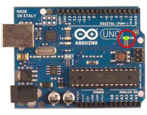
Tester son matériel
Avant de commencer à programmer la tête baissée, il faut, avant toutes choses, tester le bon fonctionnement de la carte. Ce serait idiot de programmer la carte et chercher les erreurs dans le programme alors que le problème vient de la carte !
 Nous allons tester notre matériel en chargeant un programme qui fonctionne dans la carte.
Nous allons tester notre matériel en chargeant un programme qui fonctionne dans la carte.
Mais, on n’en a pas encore fait de programmes ?

Tout juste ! Mais le logiciel Arduino contient des exemples de programmes. Et bien ce sont ces exemples que nous allons utiliser pour tester la carte.
1ère étape : ouvrir un programme
Nous allons choisir un exemple tout simple qui consiste à faire clignoter une LED. Son nom est Blink et vous le trouverez dans la catégorie Basics :
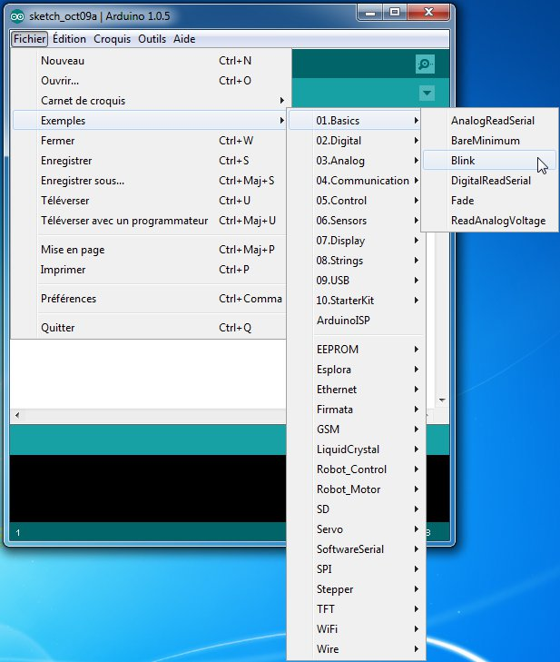
Une fois que vous avez cliqué sur Blink , une nouvelle fenêtre va apparaître. Elle va contenir le programme Blink . Vous pouvez fermer l’ancienne fenêtre qui va ne nous servir plus à rien.
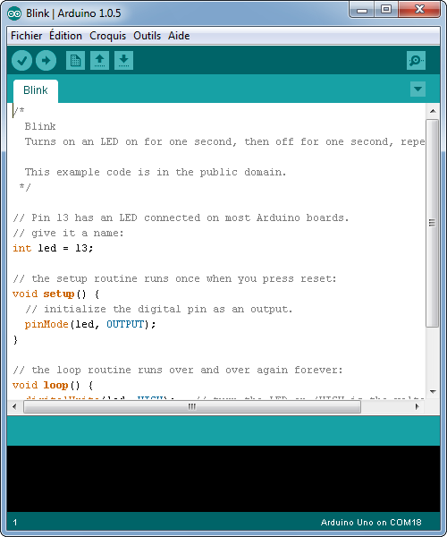
2e étape
Avant d’envoyer le programme Blink vers la carte, il faut dire au logiciel quel est le nom de la carte et sur quel port elle est branchée. Choisir la carte que l’on va programmer . Ce n’est pas très compliqué, le nom de votre carte est indiqué sur elle. Pour nous, il s’agit de la carte "Uno". Allez dans le menu Tools ("outils" en français) puis dans Board ("carte" en français). Vérifiez que c’est bien le nom "Arduin Uno" qui est coché. Si ce n’est pas le cas, cochez-le.
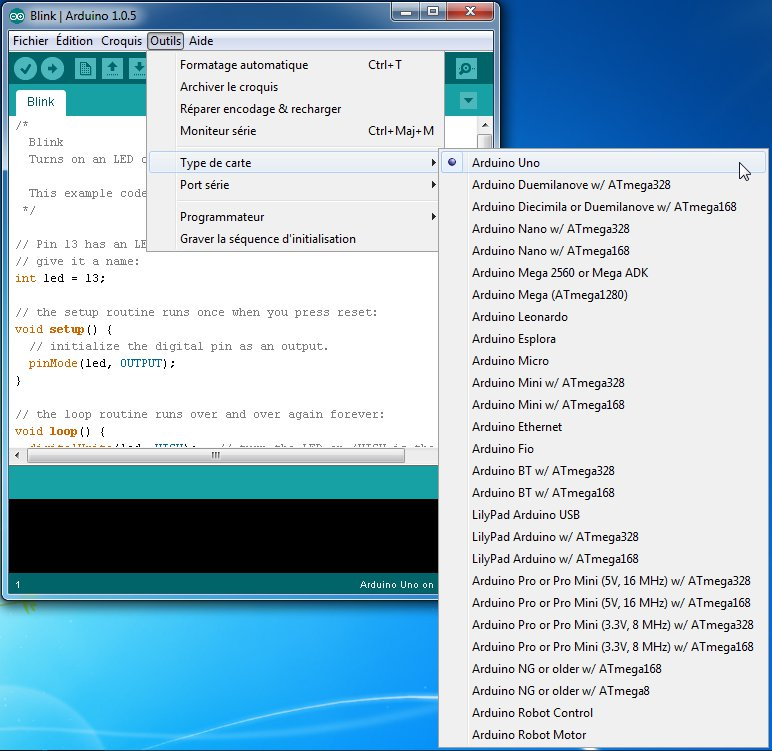
Choisissez le port de connexion de la carte. Allez dans le menu Tools , puis Serial port . Là, vous choisissez le port COMX, X étant le numéro du port qui est affiché. Ne choisissez pas COM1 car il n’est quasiment jamais connecté à la carte. Dans mon cas, il s’agit de COM18 :
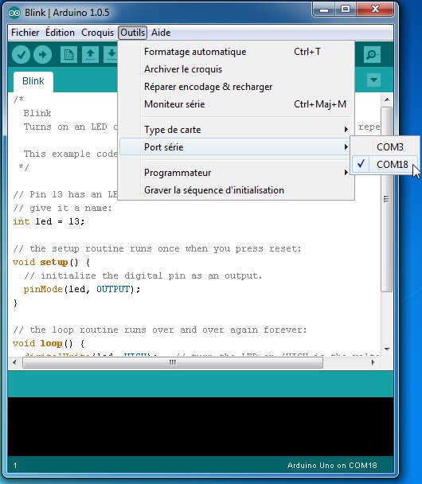
Pour trouver le port de connexion de la carte, vous pouvez aller dans le gestionnaire de périphériques qui se trouve dans le panneau de configuration . Regardez à la ligne Ports (COM et LPT) et là, vous devriez avoir Arduino Uno (COMX) . Aller, une image pour le plaisir :
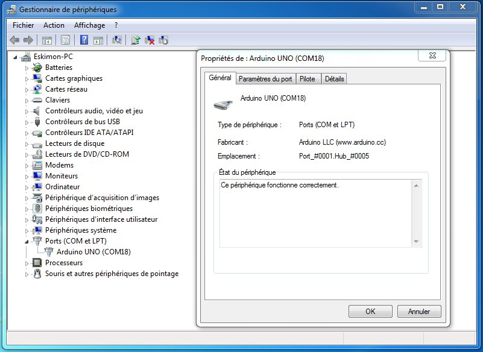
Dernière étape
Très bien. Maintenant, il va falloir envoyer le programme dans la carte. Pour ce faire, il suffit de cliquer sur le bouton Téléverser , en jaune-orangé sur la photo :
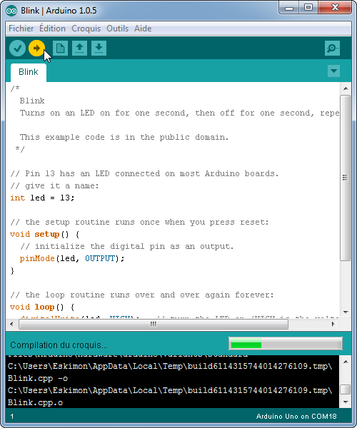
Vous verrez tout d’abord le message "Compilation du croquis en cours…" pour vous informer que le programme est en train d’être compilé en langage machine avant d’être envoyé. Ensuite vous aurez ceci :
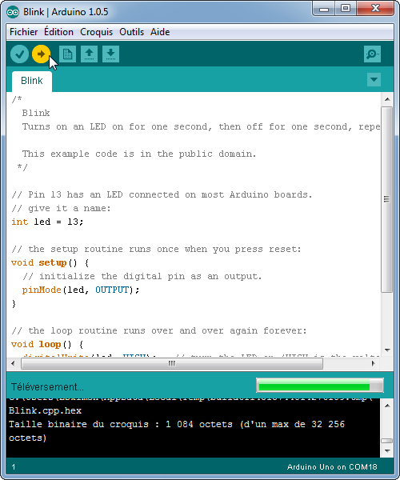
En bas de l’image, vous voyez le texte : " Téléversement… ", cela signifie que le logiciel est en train d’envoyer le programme dans la carte. Une fois terminé, il affiche un autre message :
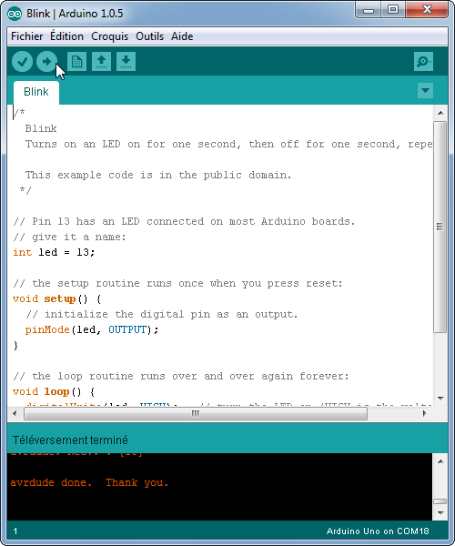
Le message affiché : " Téléversement terminé " signale que le programme a bien été chargé dans la carte. Si votre matériel fonctionne, vous devriez avoir une LED sur la carte qui clignote :
Si vous n’obtenez pas ce message mais plutôt un truc en rouge, pas d’inquiétude, le matériel n’est pas forcément défectueux!
En effet, plusieurs erreurs sont possibles:
- l’IDE recompile avant d’envoyer le code, vérifiez la présence d’erreurs.
- La voie série est peut-être mal choisie, vérifiez les branchements et le choix de la voie série.
- l’IDE est codé en JAVA, il peut-être capricieux et bugger de temps en temps (surtout avec la voie série…) : réessayez l’envoi !
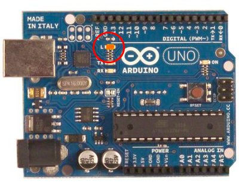
Fonctionnement global
Nous avons vu précédemment ce qu’était une carte électronique programmable. Nous avons également vu de quels éléments se basait une carte électronique pour fonctionner (schéma électronique, schéma de câblage). Je viens de vous présenter la carte, de quoi elle est principalement constituée. Enfin, je vous ai montré comment l’utiliser de manière à faire clignoter une petite lumière. Dorénavant, nous allons voir comment elle fonctionne de façon globale et répondre à quelques questions qui pourraient vous trotter dans la tête : "Comment la carte sait qu’il y a une LED de connectée ?", "Et comment sait-elle que c’est sur telle broche ?", "Et le programme, où-est-ce qu’il se trouve et sous quelle forme ?", "Comment la carte fait pour comprendre ce qu’elle doit faire ?", … De nombreuses questions, effectivement ! :P
Partons du programme
Le contenu
Le contenu du programme, donc le programme en lui-même, est ce qui va définir chaque action que va exécuter la carte Arduino. Mais ce n’est pas tout ! Dans le programme il y a plusieurs zones, que nous verrons plus en détail tout au long de la lecture de ce cours, qui ont chacune un rôle particulier. Voici leur présentation accompagnée d’un exemple.
- La première zone sert principalement (je ne vais pas m’étendre) à dire à la carte de garder en mémoire quelques informations qui peuvent être : l’emplacement d’un élément connecté à la carte, par exemple une LED en broche 13, ou bien une valeur quelconque qui sera utile dans le programme :
// déclaration de variables globales (broches...)
const int ledPin = 13;
- La zone secondaire est l’endroit où l’on va initialiser certains paramètres du programme. Par exemple, on pourra dire à la carte qu’elle devra communiquer avec l’ordinateur ou simplement lui dire ce qu’elle devra faire de la LED qui est connectée sur sa broche 13. On peut encore faire d’autres choses, mais nous le verrons plus tard.
void setup()
{
// Declaration de la broche en sortie
pinMode(ledPin, OUTPUT);
}
-
La dernière zone est la
zone principale où se déroulera le programme
. Tout ce qui va être écrit dans cette zone sera exécuté par la carte, ce sont les actions que la carte fera. Par exemple, c’est ici qu’on pourra lui dire de faire clignoter la LED sur sa broche 13. On pourra également lui demander de faire une opération telle que
2+2ou bien d’autres choses encore !
void loop() {
digitalWrite(13, HIGH); // led a l'etat haut
delay(1000); // attendre 1 seconde
digitalWrite(13, LOW); // led a l'etat bas
delay(1000); // attendre 1 seconde
}
En conclusion, tout (vraiment tout !) ce que va faire la carte est inscrit dans le programme. Sans programme, la carte ne sert à rien ! C’est grâce au programme que la carte Arduino va savoir qu’une LED est connectée sur sa broche 13 et ce qu’elle va devoir faire avec, allumer et éteindre la LED alternativement pour la faire clignoter.
Et l’envoi
Le programme est envoyé dans la carte lorsque vous cliquez sur le bouton . Le logiciel Arduino va alors vérifier si le programme ne contient pas d’erreur et ensuite le compiler (le traduire) pour l’envoyer dans la carte :
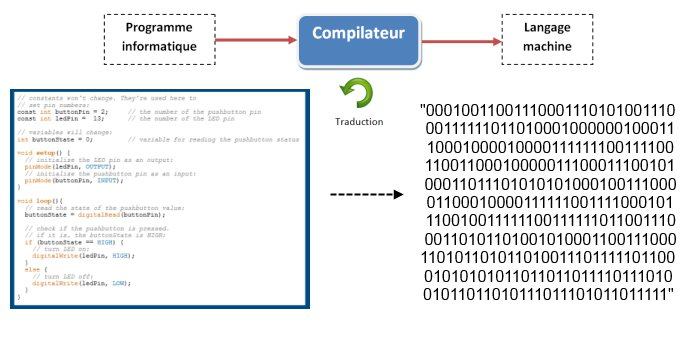
L’envoi du programme est géré par votre ordinateur : le programme passe, sous forme de 0 et de 1, dans le câble USB qui relie votre ordinateur à votre carte et arrive dans la carte. Le reste se passe dans la carte elle-même…
Réception du programme
Le programme rentre donc dans la carte en passant en premier par le connecteur USB de celle-ci. Il va alors subir une petite transformation qui permet d’adapter le signal électrique correspondant au programme (oui car le programme transite dans le câble USB sous forme de signal électrique) vers un signal plus approprié pour le microcontrôleur. On passe ainsi d’un signal codé pour la norme USB à un signal codé pour une simple voie série (que l’on étudiera plus tard d’ailleurs). Puis, ce "nouveau" signal est alors intercepté par le microcontrôleur.
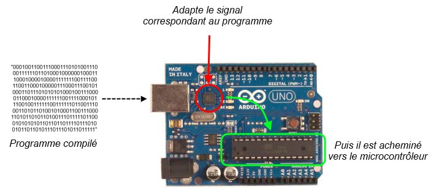
Tout le reste se passe alors…

À l’intérieur du microcontrôleur
L’emplacement du programme
Le microcontrôleur reçoit le programme sous forme de signal électrique sur ses broches Tx et Rx, d’ailleurs disponible sur les broches de la carte (cf. image). Une fois qu’il est reçu, il est intégralement stocké dans une mémoire de type Flash que l’on appellera "la mémoire de programme". Ensuite, lorsque la carte démarre "normalement" (qu’aucun programme n’est en train d’être chargé), le cerveau va alors gérer les données et les répartir dans les différentes mémoires :
- La mémoire programme est celle qui va servir à savoir où l’on en est dans le programme, à quelle instruction on est rendu. C’est à dire, en quelque sorte, pointer sur des morceaux des zones 2 et 3 que l’on a vu dans le précédent exemple de programme.
- La mémoire de données , aussi appelé "RAM" (comme dans votre ordinateur) va stocker les variables telles que le numéro de la broche sur laquelle est connectée une LED, ou bien une simple valeur comme un chiffre, un nombre, des caractères, etc.
Voici un petit synoptique qui vous montre un peu l’intérieur du microcontrôleur (c’est très simplifié !) :
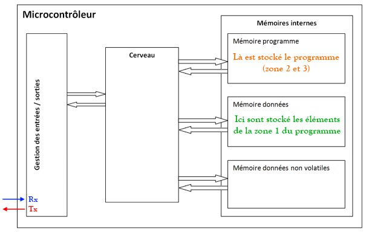
Démarrage du microcontrôleur
Lorsque le microcontrôleur démarre, il va commencer par lancer un bout de code particulier : le bootloader . C’est ce dernier qui va surveiller si un nouveau programme arrive sur la voie USB et s’il faut donc changer l’ancien en mémoire par le nouveau. Si rien n’arrive, il donne la main à votre programme, celui que vous avez créé. Ce dernier va alors défiler, instruction par instruction. Chaque fois qu’une nouvelle variable sera nécessaire, elle sera mise en RAM pour que l’on ait une mémoire de cette dernière (et supprimée lorsqu’elle n’est plus nécessaire). Sinon, les instructions vont se suivre une par une, dans l’ordre que vous les avez écrites.
Maintenant que vous connaissez et comprenez le fonctionnement global de la carte Arduino, nous allons pouvoir apprendre les bases du langage Arduino et à terme nous amuser à réaliser des programmes. Allez, hop, chapitre suivant !